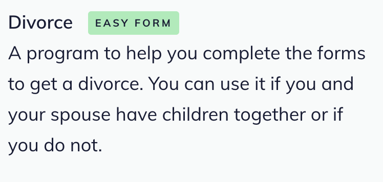

Legal content format icons
We use colors and iconography on the site to distinguish between different formats.
These are used as icons on:
legal content pages
category and subcategory listing pages
the blog listing page
the form library category and subcategory pages
the practice resources category and subcategory pages
These are used as text labels:
On the forms block in legal content
On content titles on legal content pages for:
Guides
How-to’s
Easy Forms
Blank forms
Flowcharts
Guide
Hex color: #A9c3f0
Text article
Hex color: #FFd097
How To
Hex color: #D28B7FF
How to includes legal content containing process steps, toolbox tools.
Video
Hex color: #E4e07f
Easy Form
Hex color: #A2ed87
Blank forms
Hex color: #FFB0E9
Link
Hex color: #A7E9E5
Download
Hex color: #F29f9f
Lawyer Manual
Hex color: #E2acf4
Note
Lawyer manuals are limited to ADRM content. Text articles that are “lawyer manuals” are not considered lawyer manuals for iconography purposes. Those are text articles.
Decision Tree & Flowcharts
Hex color: #Adbaff
Note
Decision tree format is limited to legal content that contains the decision tree paragraphs bundle or have a content format of flowchart.
DIY Legal Solution / Teach Me
Hex color: #96e6ff
Legal Question
Hex color: #ebdc34
Blog
Hex color: #FFAB90
IICLE
Hex color: #C1E790
Toolbox
Hex color :#96e6dd